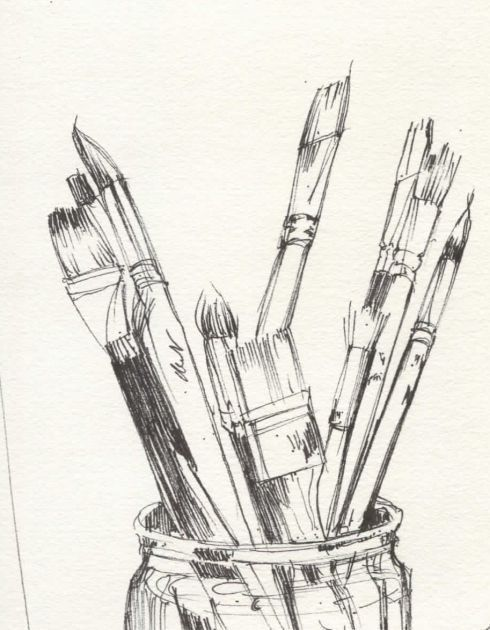

My Accomplishments:
|

|

|
Winning Prizes: A few years ago, I took extra classes for Math, Science, and English. By the end of each course, your report cards for those courses would come out, and for those who scored the highest in the whole subject curriculum would win a prize from the institute. My final grades for each subject were in the 90s - I scored the highest out of all students in English. Therefore, I won a prize of $50 from the institute/program.
During middle school, I participated in many contests and events. One event that I participated in and had a lot of fun was the coding event that happened for 1-2 months per year in my school. During that event, I created an actual robot. We learned what parts are necessary for an actual robot to function prperly, what code was used for the robot, how did it interpret everything that it was told to do, etc. I also took a coding program/class during my curriculum, and finished with a certificate and a grade of 100% in the course.
|
Click on the third picture to watch a video tutorial on how to create the owlbot. |
||||
I have committed to a lot of my hobbies. For instance, I have been in a volleyball team/group outside of school and played for at a school's soccer team. I have also won many Taek-won-do competitions. |
|||
Business Fair At School: A few years ago, my class held a business fair event at my school. It was to help us understand financial literacy and what you have to take account for in business. Each student had to create a few products to sell in our school. I took advantage of my art skills and created a few products (stickers, magnets, etc). These products sold very well during the business fair week - In total, I made around $200 - $250. My work was acknowledged by a lot of people, resulting in a lot of extra, personal pre and post-orders for my products.
I have always been interested in art. I don't really have specifics objects I prefer to draw - some of my drawings are from a book, from what I see, or from the internet.
Here are some of my artworks:

|
 |